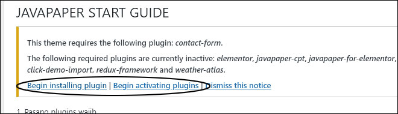
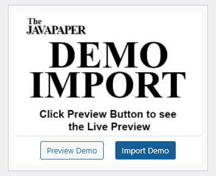
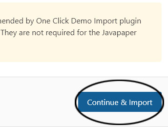
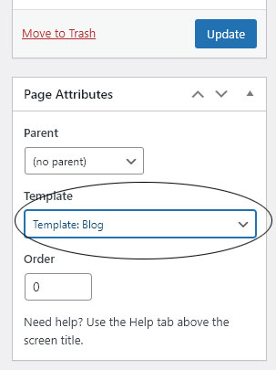
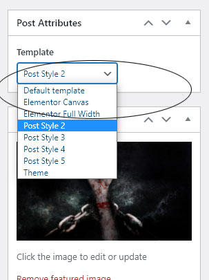

If you downloaded "All files and documentation" package from ThemeForest, please extract the zipped package downloaded from ThemeForest to your desktop. In the extracted package you will find javapaper.zip which is the WordPress theme file.
If you downloaded "Installable WordPress file only" from ThemeForest, you just need to use this file for your installation.
You can install the theme one of two ways:
WordPress Login to your admin page, navigate to Apperance > Themes > click "Add New" button at the top > continue click to "Upload Theme" button > select the javapaper.zip file you got above > Press the Install Now button to upload and install the theme.
FTP Extract the javapaper.zip file and upload the extracted folder to the /wp-content/themes/ folder on your server.
After uploading the theme, you must activate it. Navigate to the Appearence > Themes page to activate the theme.
After activated your theme, make sure to install and activated all the necessary plugins.

Next steps is import demo data. please do the following steps:


You can access the option panel by Navigate to Dashboard > Javapaper Options >
You can customize your web appearance trought Javavaper option:
After import the demo, it's time to customize your content to fit to your web. You just need to update the frontpage layout.
You can insert different module, change the module's position and else. Watch the video bellow:
You can setting up the typography in 2 ways:
You can create a blog page with the page template.

Watch the video bellow:
javapaper provided 5 single post templates. You can easily change your post and page layout.

javapaper provided 6 category and tag layout. You can easily change the template as you want.
In this tab, you will learn how to use Elementor module and create a simple frontpage
I've used the following images, icons or other files as listed.
Once again, thank you so much for purchasing this theme. As I said at the beginning, I'd be glad to help you if you have any questions relating to this theme.
Conract Us at mailto:ferryblogger@gmail.com.
Tothetheme Team